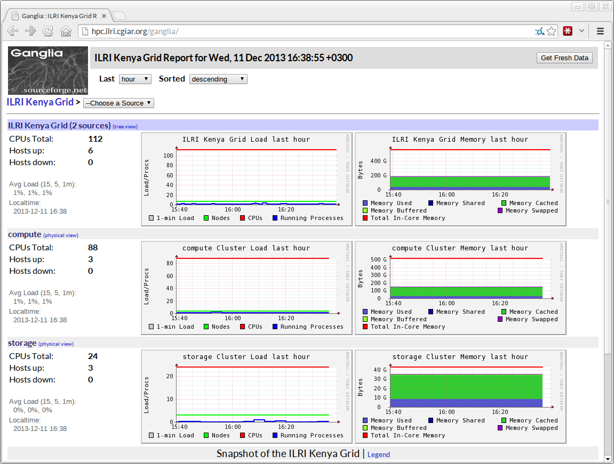

<section>
    <section data-markdown>
        <script type="text/template">
            ## Other tools

            

            GlusterFS forms the backbone, but these are important too!
        </script>
    </section>
    <section data-markdown>
        <script type="text/template">
            ## Rapid provisioning

            "rapid" is important, but "reproduceable" is too!

            <br/>

            - Use CentOS kickstarts (or similar)
                - PXE boot your systems to a known state
                - These [secure kickstarts](https://github.com/alanorth/securekickstarts) are an awesome base
            - Use ansible to orchestrate infrastructure
                - Use ansible to describe roles and orchestrate infrastructure
                - I wrote about [managing clusters with ansible](http://mjanja.co.ke/2013/08/managing-research-computing-clusters-with-ansible/)
        </script>
    </section>
    <section data-markdown>
        <script type="text/template">
            ## SLURM

            

            - Project from Lawrence Livermore National Labs (LLNL)
            - Manages cluster resources
                - Users request CPU, RAM, node allocations
                - Queues jobs, prioritizes jobs, logs usage, etc
            - Currently in use on 5 of the top 10 computing systems
        </script>
    </section>
    <section data-markdown>
        <script type="text/template">
            ## Environment modules

            Dynamically load support for packages in a user's environment

            ```
            [aorth@compute0: ~]$ which R
            /usr/bin/which: no R in (/export/apps/ilri:/bin:/usr/bin:/usr/local/bin)
            [aorth@compute0: ~]$ module load R
            [aorth@compute0: ~]$ which R
            /export/apps/R/3.0.0/bin/R
            ```

            Makes it easy to support multiple versions:

            ```
            [aorth@compute0: ~]$ module switch R/2.13.0
            [aorth@compute0: ~]$ which R
            /export/apps/R/2.13.0/bin/R
            ```

            - Install once, use everywhere!
            - Simplify system administration
            - Eliminate version conflicts
            - http://modules.sourceforge.net/
            - `yum install environment-modules`
        </script>
    </section>
    <section data-markdown>
        <script type="text/template">
            ## Ganglia

            Monitor the cluster using [Ganglia](http://ganglia.sourceforge.net/)

            

            - Easy to setup (no DB!)
            - Works over multicast UDP ("magic")
            - Doesn't do alerts, but is great for heads-up display
        </script>
    </section>
</section>
